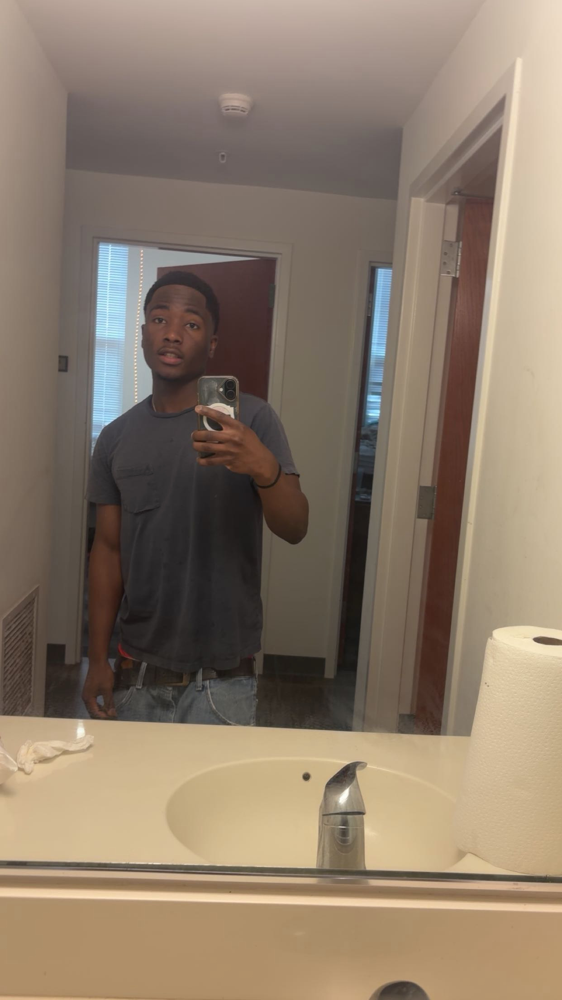

Introduction
John 'J' Afunwi | Jovial Albatross

Personal Background: I learn best by doing, so I spend my free time on hands-on projects, from tinkering with hardware to baking and following sports.
Professional Background: I'm building my experience through IT certifications and portfolio projects, including a SOC analyst home lab and a mobile password tracker app.
Academic Background: Computer science student at UNC Charlotte, working toward IT certifications alongside my coursework.
Primary Work Computer: A Windows laptop, where I use VS Code, PowerShell and MSYS2.
Primary Work Location: my dorm room or the library.
Alternate Computer: Campus computer.
Courses I'm Taking:
- ITIS 3135, Front-End Web Application Development
- I want to build a strong web portfolio and learn clean, accessible HTML and CSS.
- ITSC 2181, Command Line Hacker
- I'm learning to work in the Linux command line, which is essential for security work.
"Talk is cheap. Show me the code."- Linus Torvalds